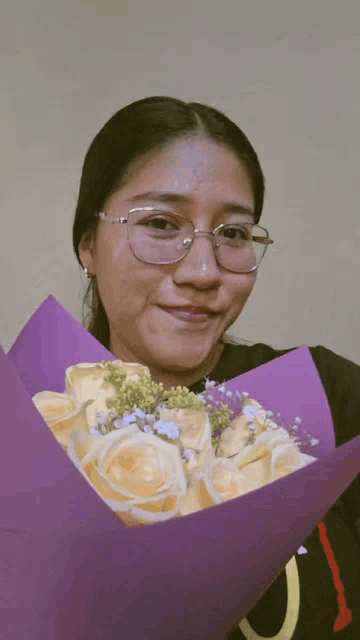
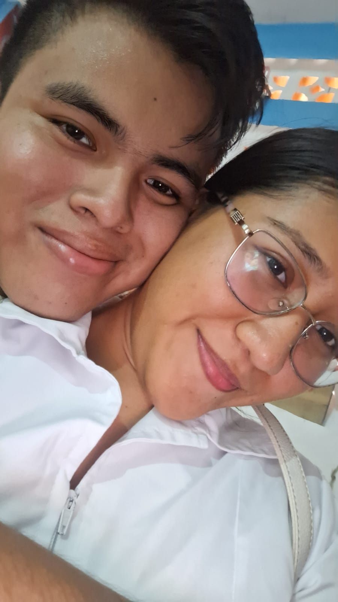
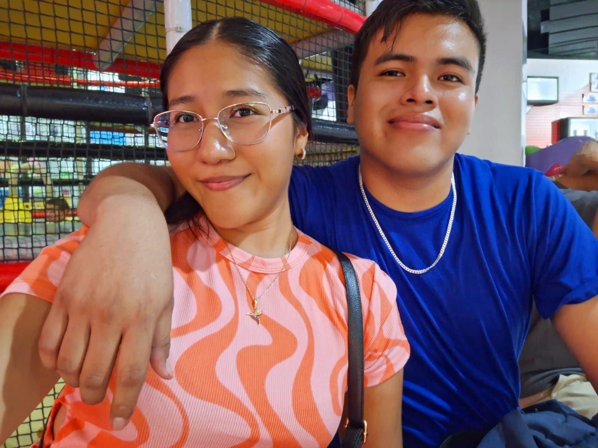

Mi querida lectora, sé que me pediste que esta página estuviera activa a más tardar el viernes jeje. La verdad, entre tantas cosas lo olvidé estos últimos días, pero ya está nuevamente aquí, viva y abierta para ti, mi niña.
Y qué mejor manera de reactivar este periódico que con una nota que me llena el corazón. Sé que hay muchas cosas que no he puesto aquí: momentos, risas, pequeños instantes que solo tú y yo entendemos. Pero lejos de hacerme sentir mal, me hace pensar en lo bien que hemos aprovechado nuestro tiempo últimamente. Antes pasaban semanas, incluso meses sin vernos… y ahora basta un mensajito tuyo para iluminarme el día.
Hemos crecido, mi vida, y esos momentos difíciles quedaron atrás. Te agradezco con toda el alma que, aun cuando la vida se pone complicada, siempre encuentras la forma de venir y regalarme un día hermoso. Créeme que yo también pongo todo de mí para corresponderte, porque lo que tenemos vale mucho.
Como el viernes pasado. Aun con tus pendientes, me regalaste una mañana increíble. Y aunque no pude cumplirte las hamburguesas, encontramos otra opción y lo resolvimos juntos, como siempre. Comimos, vimos una película tan bonita y —milagrosamente— la terminamos completa jeje. Fue una mañana hermosa, pero lo que más recuerdo no es la comida ni la película, sino las risas y lagrimitas que compartimos. Esos momentos siempre seran de mis favoritos en el mundo.
Gracias por amarme tanto, mi cielo. Prometo cuidar mejor esta página, y sobre todo, prometo seguir construyendo contigo días que valgan la pena. Te amo con todo lo que soy, hoy y siempre.
Texto: Oliver Doroteo
El reencuentro que pintó mi mundo
Fecha: 19 de octubre de 2025
Amor de mi vida, hoy vuelvo a escribirte con las palabras más sinceras que puedo encontrar. Sé que he descuidado la página, y te pido perdón por ello; han sido semanas muy agitadas, pero el tiempo, aun cuando corre tan rápido, siempre me recuerda lo mucho que te amo.
Pasaron dos semanas sin poder verte, y créeme, te extrañé en cada segundo que no estuviste frente a mí. No hubo un solo día en que no pensara en ti, incluso cuando las palabras no bastaban para expresar lo que sentía. Pero esta semana, por fin, volvimos a vernos, y fue un encuentro tan hermoso, tan lleno de sentido, que sentí que mi amor por ti creció mil veces más. Este viernes fue mágico: volver a sentir tu cuerpo junto al mío, abrazarte, mirarte tan de cerca... me recordó que lo nuestro no son simples promesas, sino un amor real y profundo. Ese momento fue perfecto, y me hiciste el hombre más feliz del mundo, como cada vez que estamos juntos.
Siempre que vienes a mí llenas de colores mi vida, igual que los plumones que te obsequié pintan cualquier superficie; tú pintas todo mi mundo. A tu lado me siento tan cómodo, tan seguro… mi princesa, eres el amor de mi vida, y quiero que nunca lo olvides.
Esta semana, lamentablemente, no podremos vernos, y eso me pone muy triste. Saber que nuestros corazones estarán distanciados me duele, pero te prometo que seguirás en mi mente a cada instante. Cada suspiro será por ti, cada pensamiento estará lleno de tu nombre. Ya te lo dije, pero quiero dejarlo escrito: te escribiré en cada mínima oportunidad que tenga, lo prometo, pinkie promise.
Solo te pido un favor, mi cielo: quiero que estés tranquila. Sé que hemos pasado por experiencias difíciles, pero te aseguro que esta vez es diferente. En este momento de mi vida, tú eres lo más importante. Si busco destacar o participar en eventos, es solo porque quiero que te sientas orgullosa de mí, de nosotros.
Te adoro, mi vida. Siempre estás en mi mente. Te escribo en una semana, en este mismo lugar, a la misma hora. Te amo con todo mi corazón.
Texto: Oliver Doroteo
Imagen: Lorena Ortega ❤
Un dia que guardo en el corazón
Fecha: 27 de septiembre de 2025
Mi querida lectora, sé que no he sido constante con las publicaciones de tus notas, y antes que nada quiero ofrecerte una disculpa sincera. Sabes bien que las últimas semanas no habíamos coincidido como deseábamos, y sin nuevos instantes compartidos me resultaba difícil escribirte con la misma emoción de siempre. Pero esta semana fue diferente, esta semana volvió a brillar un espacio para nosotros dos, y todo cambió.
Después de tanto tiempo, por fin tuvimos ese momento tan nuestro, único, irremplazable. Un tiempo solo para ti y para mí, sin prisas ni interrupciones, como si el mundo entero hubiera decidido detenerse para regalarnos unas horas de felicidad. Sin duda, fue lo más valioso que me sucedió en estos días, y aún sonrío al recordarlo.
El jueves se convirtió en un pequeño tesoro. No dudé ni un instante en dejar a un lado mis clases al saber que tenía la oportunidad de verte, era imposible desperdiciar un instante a tu lado. Compartimos una deliciosisima pizzita que sabia aun mas deli porque estabas conmigo. Es curioso cómo tu compañía transforma cualquier detalle en algo memorable, cómo conviertes lo cotidiano en extraordinario.
Luego vino ese ratito solo para nosotros, tan necesario, tan esperado. Fue como respirar profundamente después de mucho tiempo bajo el agua, como encontrar alivio en medio de la rutina. Y para coronar la tarde, llegó nuestro plan principal: el raspado de mango con piña, que más que un postre fue el sello dulce de un día perfecto.
Al final, lo único amargo fue la tristeza de tener que esperar otra ocasión para volver a verte. Sin embargo, incluso en esa nostalgia hay alegría, porque me confirma cuánto vales en mi vida. Créeme, amor, que un solo minuto contigo supera mil años con cualquier otra persona. Cada instante a tu lado es un regalo que atesoro con todo mi corazón.
Conservo este dia como un tesoro, porque más que un día fue una prueba de que, aunque el tiempo y la distancia intenten interponerse, nuestro cariño siempre encuentra la manera de florecer.
Texto: Oliver Doroteo
Imagen: Lorena Ortega ❤
La tarde más bonita
Fecha: 7 de septiembre de 2025
Estimada lectora, antes de comenzar con la nota debo disculparme por el contratiempo que tuve al publicarla. Preferí esperar a vernos para así expresarte lo que siento y lo que he sentido.
Esta semana, desde el inicio, no pintaba nada bien; creí que sería otra más sin verte. Pero surgieron lindos planes que, aunque se estropearon un poco, no iban a acabar con mis ilusiones de estar contigo.
Mi niña hermosa, no quiero que te sientas culpable si en algún momento, por cualquier razón, algún plan nuestro se cancela o no sale como esperábamos. Tus prioridades en este momento deben ser estar y apoyar a tu familia. En especial a tu papá: valora mucho esta segunda oportunidad que la vida les dio y aprovecha cada instante para compartir momentos con él.
Entiendo totalmente su negativa de dejarte salir, pero yo no podía dejar las cosas así… y sucedió. Una pequeña escapadita me regaló la tarde más hermosa a tu lado. Aunque la tos no me permitió comer un helado contigo como lo teníamos planeado, ni contarte tantas cosas que quería decirte, esa tarde fue totalmente mágica y será un recuerdo que nunca borraré de mi vida.
Bastaron solo unos instantes para volver a sentirme como cuando éramos niños en secundaria, con la misma emoción de hacer las cosas contigo. Y aunque fue poco tiempo, fue suficiente para reconfirmar lo mucho que te amo.
La despedida fue lo que más me dolió, y aunque es algo a lo que deberíamos estar acostumbrados, eso no quita el dolor. Porque lo que más quisiera en la vida es no volver a separarme de ti, estar siempre juntos.
Pero estoy en total disposición de esperar una eternidad si es necesario, con tal de estar contigo, amor mío. Eres mi más grande inspiración para hacer las cosas bien y ser una buena persona. Te amo y te prometo que te amaré en esta y en todas las vidas que existan. Por siempre y para siempre seremos tú y yo, mi niña.
Gracias por darle color a mi vida, princesa.
Con mucho amor, tu enamorado ❤
Texto: Oliver Doroteo
Imagen: Lorena Ortega ❤
Mi pensamiento constante(tú)
Fecha: 29 de agosto de 2025
Princesa hermosa, sé que llego un poco tarde, pero como cada semana estoy aquí para compartirte mis pensamientos más profundos. No tienes idea de cuánto te extrañé estos días; aunque estuve un poco ausente porque el regreso a la escuela me aturdió, créeme que en cada instante pensaba en ti.
No existe momento en el que estés fuera de mis pensamientos. Incluso me emociona aprender cosas nuevas con el único propósito de aplicarlas en el desarrollo de esta página, porque todo lo que hago aquí lo hago con amor para ti.
Mi niña, aunque por las mañanas a veces olvide avisarte que salgo de casa, o escriba poquito, el amor que siento por ti es inmenso. No hay segundo en el que no recuerde lo importante que eres para mí. Espero que muy pronto vuelva a verte y te llene de muchos besos y caricias mi amor.
Te amo, mi niña, y te amaré por siempre.
Texto: Oliver Doroteo
Un amor sin fronteras❤️
Fecha: 22 de agosto de 2025
Amada lectora, antes de comenzar quiero pedirte una pequeña disculpa por los contratiempos que a veces retrasan mis palabras. Aun así, aquí estoy, escribiendo nuevamente con el deseo de hacerte llegar todo el amor que llevo dentro.
Esta semana volví a tener la fortuna de mirarte. Ese instante en que nos olvidamos del mundo y nos refugiamos en nuestro pequeño universo me llena de una felicidad inmensa, y aunque no hay imágenes del momento, no se necesitan para saber que fue algo tan lindo que quedará grabado en mi corazón.
Estar contigo transforma mi vida en un arcoíris de colores, me regala paz y un amor que solo encuentro a tu lado. Cada momento contigo es un regalo que atesoro profundamente.
A veces siento que lo que soy o lo que tengo no alcanza para darte todo lo que mereces. Quizá no pueda ofrecerte el mundo entero aún, pero lo que sí puedo y siempre tendré para ti es un amor inmenso, infinito y sincero.
Sé que tu compañía es eterna, y cuando la vida me dé la oportunidad de crecer más y alcanzar nuevas metas, nunca olvidaré que estuviste conmigo en cada paso del camino.
No tengo dudas: eres la mujer con la que quiero compartir mis días, la mujer con la que sueño casarme algún día. Porque te amo, y te amo más de lo que las palabras podrían expresar. Nuestro amor será eterno, no lo dudes, princesa.
Texto: Oliver Doroteo
Un muy bonito encuentro
Fecha: 15 de agosto de 2025
Esta semana ha sido una de las más bonitas en mucho tiempo mi niña. El día en que viniste me devolviste todas mis energías; desde muy temprano me desperté a hacer el aseo con unas energias tan grandes como nunca. Aún mejor fue compartir un delicioso almuerzo: unas riquísimas hamburguesas. Hay que agradecer a mi mamá por prepararnos esas delicias jeje. La plática que tuvimos junto con ella fue tan amena y emocionante que el día se me pasó volando.
Muchas gracias por regalarme un pedacito de tu tiempo, aun cuando tienes pendientes importantes. Ese lindo encuentro me llenó de felicidad.
Volverte a besar y hacer un par de travesuras, jiji, me dio mil energías, corazón. Cada día confirmo lo enamorado que estoy de ti, y cada día crece aún más mi amor por ti. Te amo, princesa, eres la mejor.
Dos enamorados
Texto: Oliver Doroteo
Imagen: Lorena Ortega
Mi Presente Eres Tú
Fecha: 8 de agosto de 2025
Esta semana no fue como cualquier otra. Mi corazón volvio a llenarse de ilusiones, como siempre lo ha hecho desde que estas en mi vida. Basto un instante, una conversación, un par de besos… para que regresaran esas mariposas que despiertan en mí la esperanza más hermosa.
La esperanza de que llegue el día en que solo me despida de ti por las mañanas, cuando cada uno se dirija a su trabajo. Y que por las tardes volvamos a encontrarnos para entregarnos, sin reservas, todo el amor que nos tenemos.
Una vez más he confirmado que no hay tiempo ni distancia capaz de debilitar lo que hemos construido. Eres mi mayor inspiración, mi motor, y te amo con una certeza que no conoce final.
Gracias por regalarme minutos de tu tiempo, incluso cuando tienes mil cosas que atender. No sé qué nos deparará el mañana, y sé que lo que ya hemos vivido quedará como un recuerdo en nuestras memorias… pero también sé que debo valorar y amar el hoy. Porque el hoy y el ahora son un regalo de Dios a tu lado, por eso se llama presente. Te amo con todo mi ser princesa.
Texto: Oliver Doroteo
CUANDO ME FALTAS, TE PIENSO MÁS
Fecha: 2 de agosto de 2025
Hoy, sinceramente, no me sentía con muchas ganas de escribir. Como te he dicho antes, a veces la rutina cansa y apaga todo. Y además, el hecho de no haber podido estar contigo como me lo pediste, me dejó con el ánimo por los suelos. Me dio un bajón que me quitó todas las palabras.
Pero bastó con ver los clips que me enviaste para que todo cambiara. Solo tú puedes hacer eso. Verte, aunque sea por un momento, me devolvió el aliento que me faltaba. Y de pronto ya estaba otra vez escribiéndote, porque pensarte siempre me inspira, aunque esté cansado o triste.
No entiendo cómo alguien con tus cualidades tan hermosas sigue eligiéndome cada día, a pesar de mis fallos. No es que no me crea digno de ti, pero me sorprende que entre tanta gente que conoces, sigas escogiendo a este corazón torpe que solo sabe amarte con todo.
No sé qué hice bien para que estés conmigo, pero sí sé que quiero seguir haciendo lo mejor que pueda por ti, con la única condición de que me sigas amando como lo haces: con fuerza, con ternura, con esa forma tan tuya de quererme que me cura.
Te amo, mi niña. Y hoy quiero recordarte que mis ojos no han visto a nadie más hermosa que tú. El mundo está lleno de personas, como el cielo de estrellas… pero en mi cielo, tú eres la que más brilla, y la única que quiero mirar para siempre.
Texto: Oliver Doroteo
El silencio también habla de amor
Fecha: 28 de julio de 2025
Mi niña hermosa, han pasado ya muchas semanas desde la última vez que te vi. Podría contarlas una por una, pero no quiero que esta nota sea sobre la ausencia, sino sobre todo lo que aún permanece.
Sé que no hemos podido estar juntos. Y sé también que, aunque no lo digas, a veces eso te pesa. Me pasa lo mismo. A veces me quedo mirando el techo, o pensando de la nada, y de pronto todo me lleva a ti. A tu risa, a tus ojitos, a cómo todo es más bonito cuando estás cerca.
Pero si algo quiero que tengas claro (y ojalá esta nota lo deje muy en alto) es que aunque a veces no te escriba diario, aunque a veces no sepa ni qué decir, nunca dejo de amarte. No hay pausa, no hay distancia, no hay rutina que me saque de ti.
He aprendido que en una relación no todo son palabras bonitas, ni momentos perfectos. Hay semanas en las que uno simplemente sobrevive. Pero aun así, ahí estás tú, constante, firme, viva en cada rincón de mi pensamiento. Y por eso, aunque esta nota no tenga fuegos artificiales, sí tiene lo más importante: verdad. Y amor. Mucho amor.
Porque al final, todo esto que hacemos —esperar, aguantar, confiar— no es por costumbre. Es porque vale la pena. Porque tú vales la pena.
Así que sí, amor mío, aquí estoy. Tarde, tal vez. Pero siempre con el corazón en las manos.
Te amo. Mucho. Siempre.
Texto: Oliver Doroteo
AUN CUANDO FALTAN LAS PALABRAS
Fecha: 27 de julio de 2025
Mi amada princesa, hoy es uno de esos días en los que el alma quiere decir mucho, pero las palabras se esconden tímidas entre pensamientos dispersos. No es que no tenga nada que contarte... es que a veces lo que siento por ti va más allá de lo que cualquier letra pueda abarcar. Y aun así, aquí estoy, cumpliendo con esta cita contigo —porque escribirte es como respirar, algo que necesito hacer, incluso cuando el ánimo no está del todo en su lugar.
No hay grandes novedades esta semana. La rutina se impuso, los días pasaron volando y el cansancio quiso robarme un poco de la magia... pero no pudo. Porque bastó con pensarte para que todo volviera a tener sentido.
Te extraño mucho hermosa, tu recuerdo me acompaña incluso cuando todo parece gris, y tu amor se convierte en mi refugio cuando el día pesa más de lo esperado. Gracias por ser luz en mis días simples y mi mas grande inspiración en mis días apagados.
No es una nota perfecta. No está llena de versos ni de metáforas elaboradas. Pero es real, como este amor que crece sin esfuerzo, incluso en la calma, incluso en lo cotidiano.
Te amo sin adorno, sin filtro, sin condiciones. Te amo, incluso cuando no encuentro palabras para expresarlo...
Texto: Oliver Doroteo
UNA NOTA SINCERA
Fecha: 26 de julio de 2025
Amada lectora, en esta nota deseo dirigirme a ti con todo el cariño y respeto que mereces, para ofrecerte una sincera disculpa por no haber cumplido puntualmente con nuestra cita semanal. Mi intención jamás ha sido fallarte ni hacerte pensar que he perdido el compromiso que tengo contigo, con tu corazón y con estas palabras que cada semana te dedico.
Quiero que sepas que no ha sido por olvido ni desinterés. Al contrario, pienso en ti constantemente. Sin embargo, debo reconocer que en estos días, en los que la rutina ha sido monótona y los momentos nuevos escasean, me ha costado encontrar las palabras adecuadas para expresar todo lo que siento. No quería repetirme ni escribir por escribir; mi mayor anhelo es que cada palabra que leas lleve consigo el amor inmenso que siento por ti.
Esto no es, de ninguna manera, una queja ni un lamento. Solo necesitaba abrir mi corazón contigo, para que nunca dudes del cariño ni del deseo que tengo de seguir escribiéndote. Porque si hay algo que jamás dejaré de decirte, y que espero tú nunca te canses de leer, es que te amo, profundamente, con todo lo que soy.
Jamás permitas que en tu mente se cruce la idea de que mi amor por ti podría cambiar. Mi promesa es amarte a lo largo de toda una vida, sin importar las circunstancias o los retos que debamos enfrentar.
Han pasado ya siete años desde que comenzamos este camino juntos, y no han sido años fáciles. Pero cada obstáculo lo hemos superado tomados de la mano, y eso me da la certeza de que seguiremos adelante, fortalecidos por este amor tan grande. Cuando todo esto termine y podamos volver a abrazarnos, te demostraré —una y otra vez— cuánto te amo y cuánto te he extrañado.
Te amo, princesa. 💕
Texto: Oliver Doroteo
Un día más amándote 💖
Fecha: 18 de julio de 2025
Amor de mi vida, una vez más estoy aquí escribiéndote para recordarte cuánto te amo. Está por terminar otra semana —una más sin poder vernos—, pero aun con la distancia, mi amor por ti no hace más que crecer. 💌 Ya han pasado 2,740 días desde que nuestra historia comenzó, y créeme cuando te digo que no ha habido un solo día en todo ese tiempo en el que no haya sentido un amor inmenso por ti. 💫
Mi princesa 👑, aunque esta semana también sentimos la ausencia de nuestros abrazos, me consuela saber que llegará el momento en que volvamos a encontrarnos. Ese pensamiento le da sentido y fuerza a cada latido de mi corazón ❤️.
Desde que te encontré, sentí que el amor tocaba mi alma 🌹.
Desde entonces, vivo en un mundo de ensueño,
donde cada instante a tu lado se vuelve magia pura ✨.
A pesar de todo lo que hemos vivido, a veces me asusta que este sueño termine,
que la ilusión de nuestra historia se disuelva con el tiempo ⏳.
Pero en medio de esos miedos, me aferro a una certeza:
lo nuestro no es solo un momento, es un destino.
Porque contigo, todo lo hermoso apenas comienza 💕.
Juntos escribiremos un cuento eterno 📖:
la historia de nosotros dos. 🌙
Texto: Oliver Doroteo
Imagen: Lorena Ortega
Contigo, el tiempo se detiene 🌸
Mi niña hermosa,
Esta semana el destino nos regaló apenas unos breves instantes, pero qué dulce milagro fue cada uno de ellos. ✨ Verte, aunque fuera por un momento, bastó para que todo en mí se iluminara. En medio del cansancio, de las preocupaciones y de los días grises, verte me dio todas las energias que necesitaba para dar todo de mi.
Estar a tu lado es sentir que el mundo entero guarda silencio, que las heridas se curan, que la vida vuelve a su ritmo más sereno y bello. 💖
Gracias por regalarme tu compañía aún en los días más difíciles, cuando amar no es sólo celebrar, sino también sostenerse mutuamente en silencio.
“Si te quiero es porque sos
mi amor, mi cómplice y todo.”
– Mario Benedetti
He aprendido que no hacen falta horas infinitas ni gestos grandilocuentes para reafirmar lo muchisisimo que te amo. 🤍 Basta con mirar tu linda sonrisa para sentieme completamente amado, para sentir que eres lo que quiero para toda mi vida
A veces me pregunto que hice para merecer este amor tan puro, tan lleno de ternura y complicidad. Y aunque no tenga la respuesta, cada dia elijo agradecerte, amarte, cuidarte.
Lo que siento pot ti es un gran amor que no se puede expresar con palabras, pero existen dos las cuales son mis favoritas para compartirte un poco de lo que siento: "Te amo", te aseguro que te amo, más que ayer y menos que mañana, siempre estaré para ti.
Texto: Oliver Doroteo
ÚLTIMA HORA: ¡Corazones distanciados!
Fecha: 20 de abril de 2025
Esta semana fue especialmente lenta y un poco triste. No pude ver a la princesa que ilumina mis ojos. Por razones personales no fue posible encontrarnos, y a esto se sumó una semana muy ocupada que me dificultó incluso conectarme a las redes. Publicar esta nota se volvió un desafío... pero una promesa es una promesa.
Como le prometí a mi lectora favorita, esta nota debe salir cada semana, para recordarnos que siempre estamos cerca, incluso si el calendario y la distancia digan lo contrario. Centímetros, metros, kilómetros... ¿qué importa? En este amor, la distancia es solo eso: una cifra que no afecta en absoluto lo que sentimos el uno por el otro.
Por eso, esta nota está dedicada precisamente a eso: a la distancia. Mi princesa, quiero que sepas que el hecho de no habernos podido ver esta semana no debe hacernos sentir tristes, ni mucho menos molestos por las circunstancias. Tampoco se trata de celebrar lo ocurrido. Pero sí de recordar que la tristeza o el enojo no tienen cabida en nuestra historia. Son un cero a la izquierda.
Quiero compartirte unas líneas del gran Mario Benedetti, dedicadas a su amada Luz en el poema "Bodas de perlas":
"El largo amor no tiene cismas
ni soluciones de continuidad,
más bien continuidad de soluciones."
Recuérdalo siempre, princesa: nuestro amor siempre encontrará la manera de superar cada obstáculo. En matemáticas sabemos que existen infinitos que son más grandes que otros infinitos. Y así, con la misma certeza, quiero que sepas que nuestro amor es un infinito que trasciende todos los demás: un amor tan vasto, tan profundo, que incluso el infinito más grande se queda pequeño a su lado.
Te amo con toda mi alma, mi niña.
Texto: Oliver Doroteo
HERMOSA CITA CON MI PRINCESA
Fecha: 12 de abril de 2025
El dia de 11 de abril en compañia de mi princesa pase momentos increibles e inolvidables
Pese a tener una agenda llena y la falta de tiempo por parte de ambos, logramos una hermosa cita muy a nuestro estilo, solo los dos juntitos entregandonos tanto amor como es posible.
Las clases no fueron obstaculo y logramos nuestro objetivo, una muestra de que el amor no tiene barreras ni limites
Aunque nos hicieron falta la foticos en nuestra mente y en este periodico queda registrado el tan lindo momento que pasamos juntos.
Decir 'te amo' no es suficiente para expresar lo que siento. Pero no hacen falta palabras cuando el amor se siente.
TE AMO TANTO PRINCESA
Texto: Oliver Doroteo
Nota especial:
Parece que el amor nos da la fuerza que necesitamos para enfrentar los obstaculos de la vida,
sin embargo no es el amor quien lo hace, eres tu.
Haces que el mundo se mire color arcoiris
y logras sacar de mi una personalidad que solo contigo puedo tener.
Eres el amor de mi vida y cada dia lo confirmo con lo que me haces sentir
TE AMO
-Palabras de un enamorado-
💖Nota especial💖
Solo pienso en ti ❤️...
Sin importar el tiempo que pase,
sin importar los problemas que existan,
en mi mente no existe otra persona,
porque contigo ya lo tengo todo
y cuando resuelvo ecuaciones,
o cuando hago demostraciones
solo pienso en nuestra vida juntos.
Por que te amo.
Porque eres perfecta para mi.
Porque de la manera mas egoista solo quiero que seamos tu y yo.
Por eso y mil razones mas,
solo pienso en ti❤️
💖 Un Capítulo Más en Nuestra Historia de Amor 💖
HERMOSA CITA CON EL AMOR DE MI VIDA
Fecha: 6 de abril de 2025
Este viernes 4 de abril quedó grabado en mi corazón como un recuerdo lleno de ternura y amor. Aunque los planes no salieron exactamente como imaginamos, cada segundo compartido con mi adorada Lore fue un pedacito de cielo.
Nuestra cita, íntima y especial, tuvo lugar en mi hogar, ese rincón que se llena de luz cuando ella está cerca. Mi princesa llegó alrededor de la 1:00PM, con esa sonrisa que ilumina todo a su paso. Como si el universo supiera que era un momento especial, mi hermana nos sorprendió con una deliciosa pizza que acompañó perfectamente ese pedazito de aquella tarde.
Conversamos largo y tendido, abriendo nuestros corazones y compartiendo todo aquello que habíamos guardado con cariño. Y entre palabras sinceras y miradas cómplices, hubo besos… esos besos que tanto adoro, que me hacen sentir que el tiempo se detiene cuando estoy con ella
Fue una cita corta, sí, pero inmensamente hermosa. Porque cuando se está con el amor de la vida, hasta el instante más simple se convierte en eterno.
"Amor de mi vida, se que no soy perfecto. Y diario trabajo en ser una persona mejor para ti. Te amo y te amo mas que la semana pasada y menos que la proxima. No tienes la menor idea de lo bastante enamorado que estoy de ti. 'El tiempo te dira cuanto te amo' y no se que nos prepare el tiempo, pero se que quiero vivir todo contigo. TE AMO "
-Palabras de un enamorado
ACTUALIZACION
Estimada lectora. Te pido una disculpa por el retrazo. No volvera a suceder quiero compensar el error con una dedicatoria para usted.
https://youtu.be/owFjCHKikPY?si=MDKoitTGESnE5_vC
Pienso en ti cuando escucho esta cancion ❤️
¡Ultima hora!¡¡¡"Una semana sin mi amor"!!!
Fecha: 29 de marzo de 2025
En el amor no todo es perfecto, y una prueba de ello fue lo sucedido esta semana, pues el tiempo y las circunstancias no permitieron a nuestra pareja de enamorados verse.
Pero precisamente de eso trata el amor, trata de ver los problemas que se presenten y aprenderlo a llevar como pareja
Aprovecho esta nota para decirle al amor de mi vida lo mucho que la amo. No tienes idea de lo mucho que pienso en ti. Y el hecho de que priorice mi compromiso con la escuela no quiere decir que me importes menos, ya que es todo lo contrario. Erees lo mas importante en mi vida.
Te amo mi amor te amo mas que a las matematicas. Llegara el dia en el que lo unico que nos separara seran nuestras sabanas porque yo sabana no comparto
Te dejo una linda grafica trazada en R^3 echa para usted. Te amo mi niña.
Texto: Oliver Doroteo
Imagen: Oliver Doroteo by Geogebra
🌻🌻¡NOTICIA ESPECIAL!: INICIO DE LA PRIMAVERA🌻🌻
Fecha:21 de marzo de 2025
Hoy esta nota es diferente, es un mensaje directo al amor de mi vida, Lorena Ortega. Aunque ya te lo compartí por mensaje, quiero dejarlo aquí también para que siempre lo recuerdes.
Este día marca el inicio de la primavera. Para muchos puede ser un día cualquiera, pero para mí es una oportunidad para reflexionar sobre cómo las flores y las plantas florecen en esta temporada, mostrando su belleza al máximo. Y no puedo evitar pensar en ti, mi princesa. Eres como esa flor especial que ilumina mi vida, la que me da motivos para sonreír y ser feliz cada día.
Hoy tuve la dicha de regalarte un ramo de flores, que aunque sencillo, simboliza lo inmenso que es mi amor por ti. Eres mi flor amarilla, esa que alegra mis días y que, a diferencia de las flores que solo florecen en primavera, tú brillas en cada estación del año y llenas de luz todos mis momentos.
Te amo, preciosa. Nunca lo olvides.
Y aunque la emoción del momento no nos permitió tomarnos fotos juntos, adjunto una imagen que capturó la enorme sonrisa que me regalaste hoy.
¡Feliz inicio de primavera para mi flor más hermosa!❤️❤️
Texto: Oliver Doroteo
Fotografía: Lorena Ortega

UNA CITA MÁS PARA ENAMORARSE
Fecha:21 de marzo de 2025
Una vez más, el amor se hizo presente en una cita especial entre Lorena O. y Oliver D., dos almas que, pese a los días sin verse, lograron reunirse y disfrutar de una mañana inolvidable.
Este jueves 20 de marzo, la pareja más enamorada del mundo comenzó su día visitando la tienda Aurrera, donde eligieron unos deliciosos panes y unas papitas para compartir un almuerzo sencillo pero lleno de complicidad y risas.
Aunque en realidad fue lo ultimo que comieron ;) , lo que realmente los alimentó fue la compañía mutua y el cariño que crece cada vez que se ven.
"Ver a mi amor me devuelve las fuerzas que me faltan para seguir echándole ganas a la vida"
- Palabras de un enamorado -
¡Esperamos que esta historia de amor siga sumando citas y momentos inolvidables!
Texto: Oliver Doroteo
Fotografía: Lorena Ortega

¡UN ERROR DE EMOCIONES! 2 enamorados pasan un mal momento.
Fecha: 14 de marzo de 2025
Durante esta semana dos enamorados pasaron un mal momento que, aunque no paso a mayores, sin duda existe arrepentimiento por parte de uno de ellos.
Los echos sucedieron este lunes 10 de marzo. Lorena y Oliver como en todas las noticias de este muro, son los protagonistas de esta historia. Ambos se disponian a verse, pues ya se extrañaban el uno al otro. Sin embargo debido a un problema de red Oliver no tuvo forma de comunicarse correctamente para llegar a un acuerdo. Por otro lado la bella dama Lorena, no cuestiono lo suficiente esta inactividad de su pareja y no se dio el tiempo para realizar una llamada, aun cuando Oliver envio un mensaje incompleto dejando con insertidumbre sobre su paradero.
Sin embargo ante el sube y baja de emociones en combinacion con otros factores Oliver tomo la mala desicion de cancelar todo, hiriendo asi los sentimientos de Lore
Para cuando reacciono ya era muy tarde y aunque solucionaron las cosas el mal momento no se borra
"Mi amorcito en esta nota aprovecho para disculparme por mi accion del lunes. Y tambien para decirte que, se que estuve ausente por enfocar mi atencion en mis actividades escolares y buscare la forma de compensar eso. Por el momento ya sali de compromisos y me es posible bajar la guardia un poco para ponerme al dia contigo, te amo nunca lo olvides eres mi todo"
-Palabras de un enamorado
Texto: Oliver Doroteo
¡Noticia Especial! Celebrando a las mujeres que iluminan mi vida.
Fecha: 8 de marzo de 2025
Hoy, 8 de marzo, es un día especial, un día para conmemorar la fuerza, la valentía y la determinación de las mujeres que hacen de este mundo un lugar mejor. Pero para mí, no es solo una fecha en el calendario, es una oportunidad para detenerme un momento y agradecer a aquellas mujeres que han sido fundamentales en mi vida, que han dejado huella en mi corazón y me han enseñado que no hay obstáculo imposible cuando se tiene voluntad y amor.
Desde el primer día, he estado rodeado de mujeres extraordinarias:
Mi madre, la mujer que, con una fortaleza inquebrantable, ha resistido todo por el bienestar de su hijo. Ha sido refugio en las tormentas, impulso en los momentos de duda y el amor más puro que he conocido.
Mis hermanas, cada una con una historia que contar, con un camino lleno de retos que han sabido convertir en triunfos. Una, luchando cada día para darles a sus hijos lo que ella no tuvo, demostrando que el amor de una madre es capaz de derribar cualquier obstáculo. Y la más pequeña, abriendo caminos propios, logrando metas que su hermano no pudo, brillando con luz propia y demostrando que los sueños se alcanzan con esfuerzo y determinación.
Y, al final, pero jamás menos importante… tú, mi amor.
Mi novia, mi compañera, mi futuro, mi todo.
Desde que llegaste a mi vida, todo cambió. No solo porque te amo con cada parte de mi ser, sino porque en ti encontré todo lo que alguna vez soñé. Eres esa persona con la que quiero compartir mis días, la que con solo una mirada hace que todo tenga sentido, la que con una risa puede iluminar hasta el día más gris.
Eres fuerte, inteligente, valiente y capaz de lograr todo lo que te propongas. No hay reto que pueda detenerte, no hay sueño demasiado grande para ti. Y lo más hermoso es que no solo eres increíble por todo lo que logras, sino por la persona que eres: generosa, comprensiva, con un corazón tan grande que a veces siento que no cabe en este mundo.
Me has enseñado que el amor no se trata solo de palabras bonitas, sino de pequeños gestos, de estar en los momentos importantes, de apoyarnos, de crecer juntos. Eres mi hogar, mi refugio, mi más grande orgullo. No tienes idea de lo mucho que admiro cada cosa que haces, de lo orgulloso que me siento de ti y de lo feliz que soy por compartir mi vida contigo.
Eres la mujer de mi vida, la persona con la que quiero seguir sumando días, sueños y aventuras.
Te amo, Lore. Gracias por ser tú, por ser todo lo que necesito y más.
En este Día de la Mujer, celebro la fuerza, la valentía y el amor de todas ustedes, pero sobre todo, celebro a la mujer que me ha robado el corazón y que, sin duda alguna, es lo mejor que me ha pasado.
Texto: Oliver Doroteo
¡SANTIAGO REGISTRADO!
Fecha:7 de marzo de 2025
El dia viernes 7 de marzo fui sorprendido con la noticia de que el pequeño Santiago (sobrino de mi Lore) fue registrado
Sumado a esto el admv Lorena O.J, fue testigo legal de dicho registro
Sin duda este evento tiene que quedar registrado en este mural.
Texto: Oliver Doroteo
¡Amor sin fotos, pero con recuerdos imborrables!
Fecha: 7 de marzo de 2025
El amor verdadero no siempre necesita pruebas gráficas, y esta hermosa pareja lo demuestra. El pasado lunes 3 de marzo, dos almas destinadas a encontrarse disfrutaron de un día inolvidable, aunque sin una sola fotografía que lo atestiguara.
"Fue la tarde de este jueves cuando me encontraba revisando la fecha de nuestra última cita y me percaté de que, en efecto, no existía ninguna fotografía", confesó el escritor de esta historia, con un toque de nostalgia y amor en sus palabras.
El encuentro comenzó en Aurrerá, donde, con la emoción de un plan sencillo pero especial, compraron los materiales para preparar unas deliciosas hamburguesas "a su estilo". Pero más allá de la comida, lo que realmente hizo especial el día fueron los recuerdos que despertó: aquellos tiempos de preparatoria, cuando la locura del amor los llevaba a escaparse de clases solo para estar juntos.
"Mi cielo, quiero decirte que fue un día increíble. Me llenó de recuerdos como cuando éramos unos preparatorianos locos que se saltaban clases para poder estar juntos. Te amo tanto, gracias por todo. Solo me faltaron foticos, pero fue un día realmente hermoso."
Aunque no haya imágenes para compartir, esta historia demuestra que el amor verdadero se guarda en el corazón y no en la galería del celular.
Texto: Oliver Doroteo
Para el amor de mi vida
Fecha: 28 de febrero de 2025
Amor de mi vida, aprovecho la nota de esta semana para escribirte un mensaje que quiero que siempre tomes en cuenta.
Se que durante esta semana estuve muy ausente, ademas no me fue posible vernos como lo teniamos planeado.
Quiero pedirte una disculpa, no quiero que pienses que no tengo interes, creeme que busque muchas soluciones pero no me fue posible a pesar de mis intentos.
Quiero que sepas que te amo bastante. Siempre que me extrañes abre esta nota y recuerda que siempre estas en mi mente, no hay forma de que deje de pensar en ti. Recuerda que eres el amor de mi vida y nos esperan muchas cosas bellas adelante.
Te amo ADMV
Texto: Oliver Doroteo
❤️❤️ Un Lunes Inolvidable: La Visita de la Mujer Más Hermosa del Mundo
❤️❤️
Fecha: 21 de febrero de 2025
El pasado lunes 17 de febrero quedó marcado como un día especial e inolvidable. La mujer más hermosa del mundo hizo una visita llena de amor y alegría, convirtiendo un día común en una aventura.
Desde el primer instante, la felicidad se sintió en el aire. Juntos compartimos momentos llenos de risas y complicidad, disfrutando de su compañía de una manera que solo ella sabe hacer especial. Como si fuera poco, preparó un delicioso omelet con el toque perfecto de amor y dedicación, haciendo que cada bocado fuera una experiencia única.
Pero la sorpresa no terminó ahí. Con sus manos llenas de creatividad y cariño, me obsequió una hermosa manualidad hecha por ella misma, un detalle que refleja el inmenso amor que nos une. La imagen de este regalo especial queda como testimonio de su ternura y dedicación.
Sin duda, cada momento a su lado es un regalo que supera cualquier expectativa. Cada vez que la veo, mi corazón se llena de una emoción inexplicable, recordándome lo afortunado que soy de tenerla en mi vida.
Te amo mucho, mujer hermosa. Gracias por tu visita.
Texto: Oliver Doroteo
Fotografia: Lorena Ortega
❤️❤️ La pareja más hermosa celebra su séptimo 14 de febrero juntos
❤️❤️
Fecha: 14 de febrero de 2025
En un evento lleno de amor y felicidad, la pareja más hermosa del mundo celebra hoy su séptimo 14 de febrero juntos. Con cada año que pasa, su historia se llena de más momentos inolvidables, sonrisas compartidas y promesas cumplidas.❤️❤️❤️
Desde aquel primer San Valentín hasta hoy, han construido un vínculo que no solo resiste el paso del tiempo, sino que se fortalece con cada día. Esta fecha especial no es solo un recordatorio de su amor, sino una prueba de que cuando dos corazones laten al mismo ritmo, el destino siempre encuentra la manera de unirlos.
Los testigos de esta hermosa historia aseguran que la complicidad entre ellos es inigualable y que el brillo en sus ojos al mirarse sigue siendo el mismo que en el primer día.
¡Felicidades a esta increíble pareja por siete San Valentines juntos! Que este sea solo otro capítulo en la historia de amor más hermosa jamás contada.❤️❤️❤️
Texto: Oliver Doroteo
Fotografia: Oliver Doroteo
🌸 Una tarde increible 🌸
Fecha: 7 de febrero de 2025
El dia de hoy pase una tarde muy hermosa a tu lado, te veias tan perfecta con tu estilo unico.
Fue muy lindo que en todo momento estuviste a mi lado. Y claro fue lindo que acompañaras a
sara en su dia. Despues de una rica comida nos divertimos mucho en recorcholis. Sin querer
queriendo tuvimos una cita increible. Te amo hermosa 💖

Texto: Oliver Doroteo
Foto: Lorena Ortega
✨Segunda noticia✨
Fecha: 4 de febrero de 2025
. He mejorado el diseño de la pagina, y ya puedo ingresar emojis. Solo me queda mejorar algunas cosas y añadir imagenes. Pronto estara lista para comenzar a publicar. Aunque tengo contemplado que este sea un detalle por el dia del amor. Asi que puedo mejorar. Te amo 💕💕💕
Primera nota
Fecha: 2 de febrero de 2025
Hola mi cielo esta es la primer nota que publico para verificar errores. Te amo.